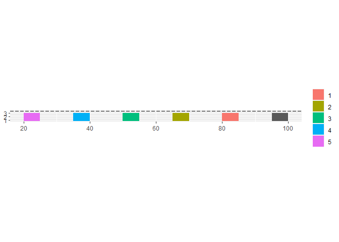
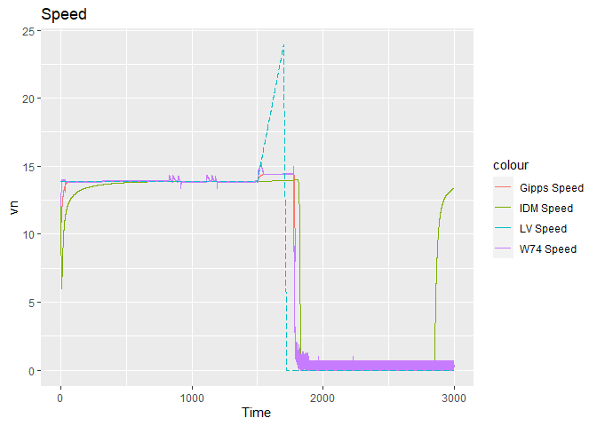
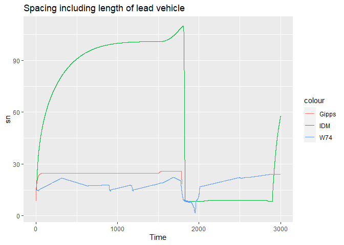

The goal of carfollowingmodels is to make several car following models available in R for numerical simulation.
Installation
carfollowingmodelsis not on CRAN yet. You can download the development version from GitHub with:
# install.packages("devtools")
devtools::install_github("durraniu/carfollowingmodels")Example
To use any car-following model, you need to provide the lead vehicle data, initial position, speed and/or acceleration of following vehicle(s), and model parameters.
The models used in this package are cited below:
| Model | Citation |
|---|---|
| Intelligent Driver Model | Treiber and Arne Kesting (2013) |
| Gipps Model | Gipps (1981) |
| Wiedemann 74 Model | Wiedemann and Reiter (1992); Higgs, Abbas, and Medina (2011) |
Following shows an example with 5 following vehicles. The lead vehicle is moving at 13.9 m/s at the reference position of 100 m.
# Time
last_time <- 3000 ## s
time_frame <- 0.1 ## s
Time <- seq(from = 0, to = last_time, by = time_frame)
time_length <- length(Time)
## Lead vehicle
vn1_first <- 13.9 ## first speed m/s
xn1_first <- 100 ## position of lead vehicle front center m
bn1_complete <- c(rep(0, 15000),
rep(0.05, 2000),
rep(-1, 3000),
rep(0, 8000),
rep(-5, 2001))
#############################################
### Complete speed trajectory of Lead vehicle
#############################################
vn1_complete <- rep(NA_real_, time_length) ### an empty vector
xn1_complete <- rep(NA_real_, time_length) ### an empty vector
vn1_complete[1] <- vn1_first
xn1_complete[1] <- xn1_first
for (t in 2:time_length) {
### Lead vehicle calculations
vn1_complete[t] <- vn1_complete[t-1] + (bn1_complete[t-1] * time_frame)
vn1_complete[t] <- ifelse(vn1_complete[t] < 0, 0, vn1_complete[t])
xn1_complete[t] <- xn1_complete[t-1] + (vn1_complete[t-1] * time_frame) +
(0.5 * bn1_complete[t-1] * (time_frame)^2)
}
## Lead vehicle data in a dataframe
ldf <- data.frame(Time, bn1_complete, xn1_complete, vn1_complete)Intelligent Driver Model (IDM)
To predict the trajectories of the 5 following vehicles, you can use any car-following model available in this package. For example, the simulate_idm() function uses the Intelligent Driver Model as shown below. For more details on input arguments, type ?simulate_idmin the console.
library(carfollowingmodels)
## Run the IDM function:
results_idm <- simulate_idm(
resolution=0.1,
N=5,
dfn1=ldf,
xn1="xn1_complete",
vn1="vn1_complete",
xn_first=list(85, 70, 55, 40, 25),
vn_first=list(12, 12, 12, 12, 12),
ln=list(5, 5, 5, 5, 5),
a=2,
v_0=14.4,
small_delta=1,
s_0=4,
Tg=1,
b=1.5
)
head(results_idm)
#> fvn Time xn1 vn1 ln1 sn_star v_dot xn vn sn
#> 1 1 0.0 100.00 13.9 5 9.418207 -1.4407191 85.00000 12.00000 10.00000
#> 2 1 0.1 101.39 13.9 5 8.860068 -1.1565350 86.19280 11.85593 10.19720
#> 3 1 0.2 102.78 13.9 5 8.420694 -0.9399018 87.37261 11.74027 10.40739
#> 4 1 0.3 104.17 13.9 5 8.069309 -0.7704464 88.54193 11.64628 10.62807
#> 5 1 0.4 105.56 13.9 5 7.785079 -0.6351232 89.70271 11.56924 10.85729
#> 6 1 0.5 106.95 13.9 5 7.553349 -0.5252076 90.85646 11.50573 11.09354
#> deltav
#> 1 -1.900000
#> 2 -2.044072
#> 3 -2.159725
#> 4 -2.253716
#> 5 -2.330760
#> 6 -2.394273Now you can plot the results:
library(tidyverse)
#> Warning: package 'tidyverse' was built under R version 4.0.4
#> -- Attaching packages --------------------------------------- tidyverse 1.3.0 --
#> v ggplot2 3.3.3 v purrr 0.3.4
#> v tibble 3.0.6 v dplyr 1.0.4
#> v tidyr 1.1.2 v stringr 1.4.0
#> v readr 1.4.0 v forcats 0.5.1
#> -- Conflicts ------------------------------------------ tidyverse_conflicts() --
#> x dplyr::filter() masks stats::filter()
#> x dplyr::lag() masks stats::lag()
## Position
results_at_time_0_LV <- subset(results_idm, fvn==1 & Time ==0)
results_at_time_0_FV <- subset(results_idm, Time ==0)
ggplot() +
geom_rect(data = results_at_time_0_LV,
aes(xmin = xn1 - ln1,
xmax = xn1,
ymin = 0.628,
ymax = 3.028)) +
geom_rect(data = results_at_time_0_FV,
aes(group = fvn,
fill = as.factor(fvn),
xmin = xn - 5,
xmax = xn,
ymin = 0.628,
ymax = 3.028)) +
geom_hline(yintercept = 3.6, linetype = "longdash") +
coord_fixed(ratio=1) +
theme(legend.title = element_blank())
## Speed
ggplot(data = results_idm) +
geom_line(aes(x = Time, y = vn, color = as.factor(fvn), group=fvn)) +
geom_line(data = subset(results_idm, fvn==1),
aes(x = Time, y = vn1, color = "LV Speed")) +
theme(legend.title = element_blank())
Gipps Model
results_gipps <- simulate_gipps(
resolution=0.1,
N=5,
dfn1=ldf,
xn1="xn1_complete",
vn1="vn1_complete",
xn_first=list(85, 70, 55, 40, 25),
vn_first=list(12, 12, 12, 12, 12),
ln=list(6.5, 6.5, 6.5, 6.5, 6.5),
an=2,
Vn=14.4,
tau=0.1,
bn=-1.5,
bcap=-2
)
head(results_gipps)
#> fvn Time xn1 vn1 ln1 bn xn vn sn deltav
#> 1 1 0.0 100.00 13.9 6.5 0.7815591 85.00000 12.00000 8.50000 -1.900000
#> 2 1 0.1 101.39 13.9 6.5 0.7585004 86.20391 12.07816 15.18609 -1.821844
#> 3 1 0.2 102.78 13.9 6.5 0.7359608 87.41552 12.15401 15.36448 -1.745994
#> 4 1 0.3 104.17 13.9 6.5 0.7139400 88.63460 12.22760 15.53540 -1.672398
#> 5 1 0.4 105.56 13.9 6.5 0.6924367 89.86093 12.29900 15.69907 -1.601004
#> 6 1 0.5 106.95 13.9 6.5 0.6714485 91.09429 12.36824 15.85571 -1.531760
## Speed
ggplot(data = results_gipps) +
geom_line(aes(x = Time, y = vn, color = as.factor(fvn), group=fvn)) +
geom_line(data = subset(results_gipps, fvn==1),
aes(x = Time, y = vn1, color = "LV Speed")) +
theme(legend.title = element_blank())
#> Warning: Removed 60560 row(s) containing missing values (geom_path).
Wiedemann 74 Model (individual driver)
results_w74d <- simulate_wiedemann74_driver(
resolution=0.1,
N=5,
dfn1=ldf,
xn1="xn1_complete",
vn1="vn1_complete",
bn1="bn1_complete",
xn_first=list(85, 70, 55, 40, 25),
vn_first=list(12, 12, 12, 12, 12),
ln=list(5, 5, 5, 5, 5),
D_MAX=150,
V_MAX=44,
V_DESIRED=14.4,
FAKTORVmult=0.001,
BMAXmult=0.08,
BNULLmult=0.25,
BMIN=-5,
CX=50,
AXadd=2,
BXadd=2,
EXadd=2,
OPDVadd=1.5
)
head(results_w74d)
#> fvn Time xn1 vn1 bn xn vn sn deltav AX
#> 1 1 0.0 100.00 13.9 0.5926839 85.00000 12.00000 15.00000 -1.900000 7
#> 2 1 0.1 101.39 13.9 0.5782258 86.20296 12.05927 15.18704 -1.840732 7
#> 3 1 0.2 102.78 13.9 0.5641204 87.41178 12.11709 15.36822 -1.782909 7
#> 4 1 0.3 104.17 13.9 0.5503591 88.62631 12.17350 15.54369 -1.726497 7
#> 5 1 0.4 105.56 13.9 0.5369335 89.84641 12.22854 15.71359 -1.671461 7
#> 6 1 0.5 106.95 13.9 0.5238353 91.07195 12.28223 15.87805 -1.617768 7
#> BX ABX CX SDX SDV CLDV OPDV BMAX B_App
#> 1 6.928203 13.92820 50 20.85641 0.02560000 0.1024000 -0.1536000 0.5926839 NA
#> 2 6.945291 13.94529 50 20.89058 0.02681103 0.1072441 -0.1608662 0.5782258 NA
#> 3 6.961922 13.96192 50 20.92384 0.02801083 0.1120433 -0.1680650 0.5641204 NA
#> 4 6.978109 13.97811 50 20.95622 0.02919785 0.1167914 -0.1751871 0.5503591 NA
#> 5 6.993866 13.99387 50 20.98773 0.03037064 0.1214826 -0.1822238 0.5369335 NA
#> 6 7.009203 14.00920 50 21.01841 0.03152790 0.1261116 -0.1891674 0.5238353 NA
#> B_Emg BNULL cf_state_sim ln1
#> 1 NA 0.25 free_driving 5
#> 2 NA 0.25 free_driving 5
#> 3 NA 0.25 free_driving 5
#> 4 NA 0.25 free_driving 5
#> 5 NA 0.25 free_driving 5
#> 6 NA 0.25 free_driving 5
## Speed
ggplot(data = results_w74d) +
geom_line(aes(x = Time, y = vn, color = as.factor(fvn), group=fvn)) +
geom_line(data = subset(results_w74d, fvn==1),
aes(x = Time, y = vn1, color = "LV Speed")) +
theme(legend.title = element_blank())
Compare Models
Comparing models is difficult as each model has at least a few unique parameters of its own. Nevertheless, following shows the speed of the fifth following vehicle as predicted by different models:
results_gipps_fv1 <- results_gipps %>%
filter(fvn == 5)
results_idm_fv1 <- results_idm %>%
filter(fvn == 5)
results_w74d_fv1 <- results_w74d %>%
filter(fvn == 5)
ggplot() +
geom_line(data = results_gipps_fv1 ,
aes(x = Time, y = vn, color = "Gipps Speed")) +
geom_line(data = results_idm_fv1 ,
aes(x = Time, y = vn, color = "IDM Speed")) +
geom_line(data = results_w74d_fv1 ,
aes(x = Time, y = vn, color = "W74 Speed")) +
geom_line(data = ldf ,
aes(x = Time, y = vn1_complete, color = "LV Speed"), linetype = "longdash") +
ggtitle("Speed")
#> Warning: Removed 12110 row(s) containing missing values (geom_path).
ggplot() +
geom_line(data = results_gipps_fv1 ,
aes(x = Time, y = sn, color = "Gipps")) +
geom_line(data = results_idm_fv1 ,
aes(x = Time, y = sn+ln1, color = "IDM")) +
geom_line(data = results_w74d_fv1 ,
aes(x = Time, y = sn, color = "W74")) +
ggtitle("Spacing including length of lead vehicle")
#> Warning: Removed 12111 row(s) containing missing values (geom_path).
References
Gipps, P G. 1981. “A behavioural car following model for computer simulation.” Transportation Research Part B 15: 101–15. http://turing.iimas.unam.mx/sos/sites/default/files/Gipps_ABehaviouralCarFollowingModel.pdf.
Higgs, Bryan, MM Abbas, and Alejandra Medina. 2011. “Analysis of the Wiedemann Car Following Model over Different Speeds using Naturalistic Data.” 3rd International Conference on Road Safety and Simulation, 1–22.
Treiber, Martin, and Arne Kesting. 2013. “Traffic flow dynamics.” Traffic Flow Dynamics: Data, Models and Simulation, Springer-Verlag Berlin Heidelberg.
Wiedemann, Reiter, and U Reiter. 1992. “Microscopic traffic simulation: the simulation system MISSION, background and actual state.” Project ICARUS (V1052) Final Report. Brussels, CEC 2: 1–53.